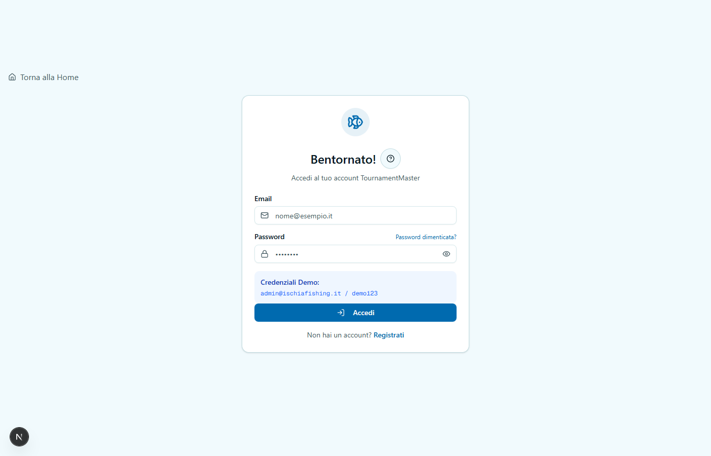
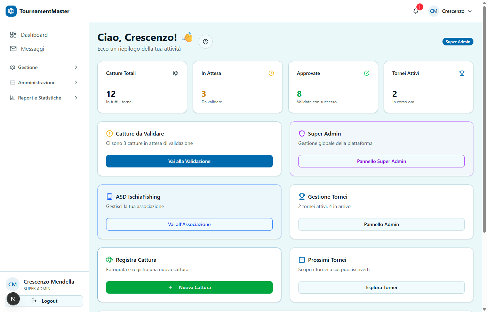
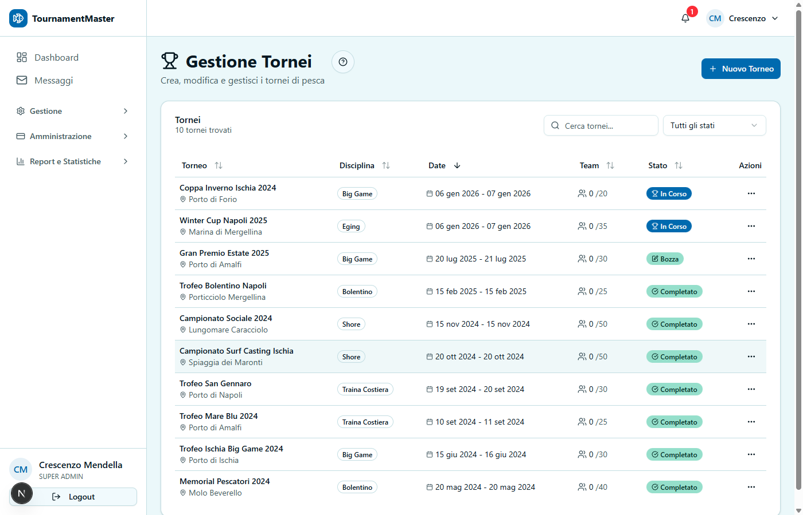
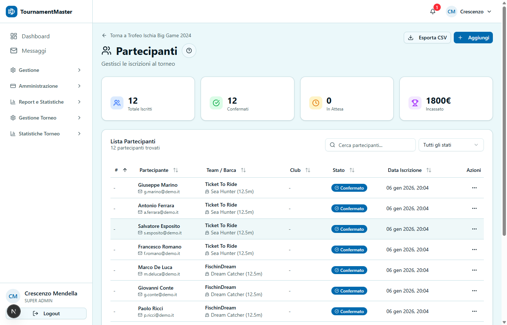
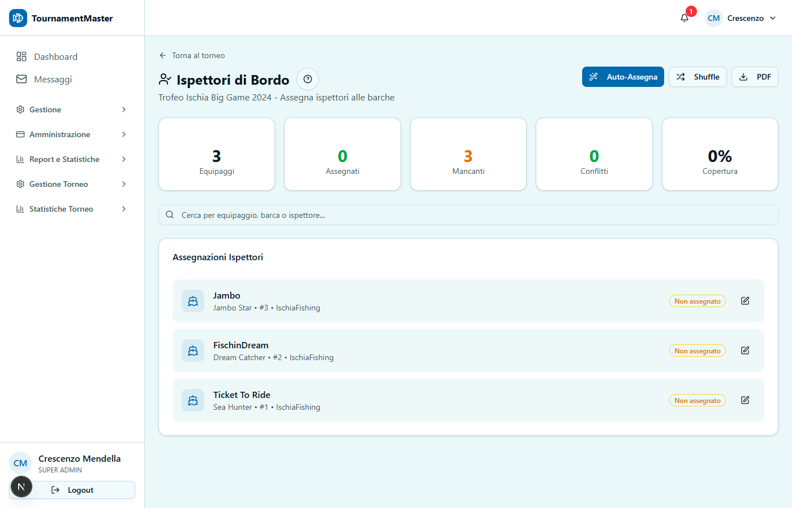
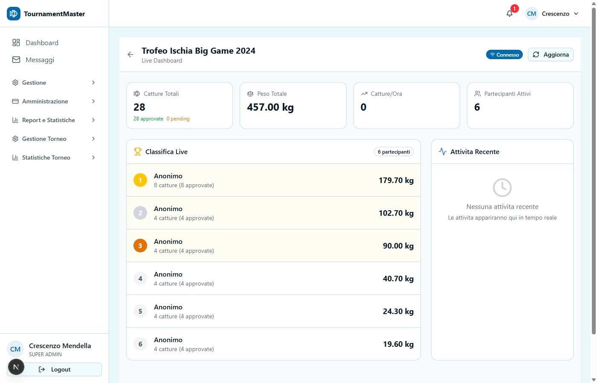
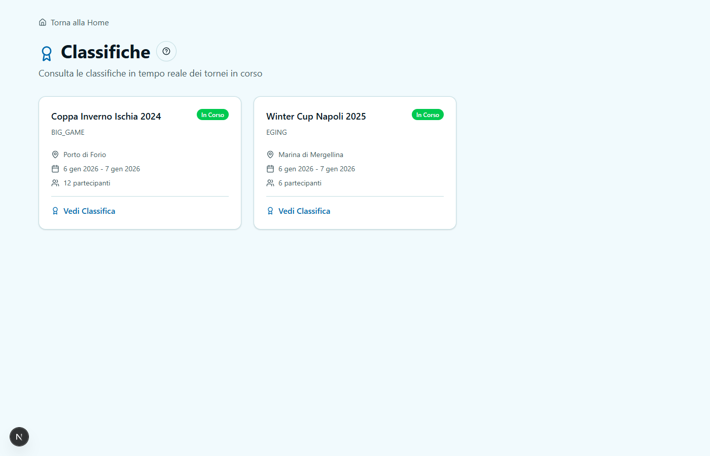
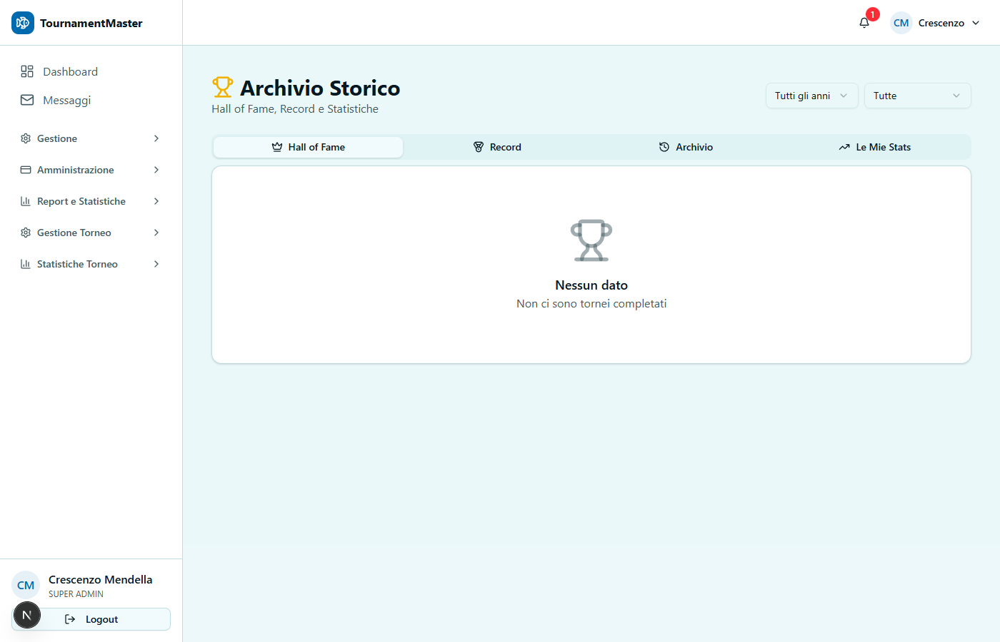
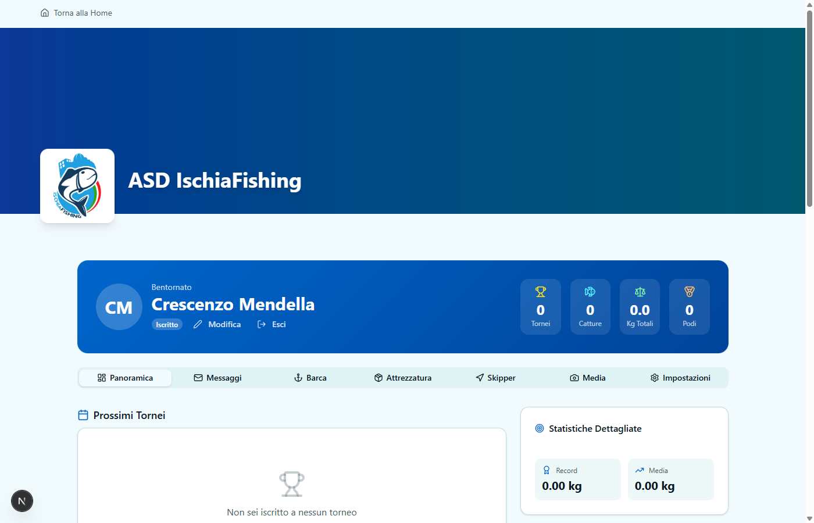
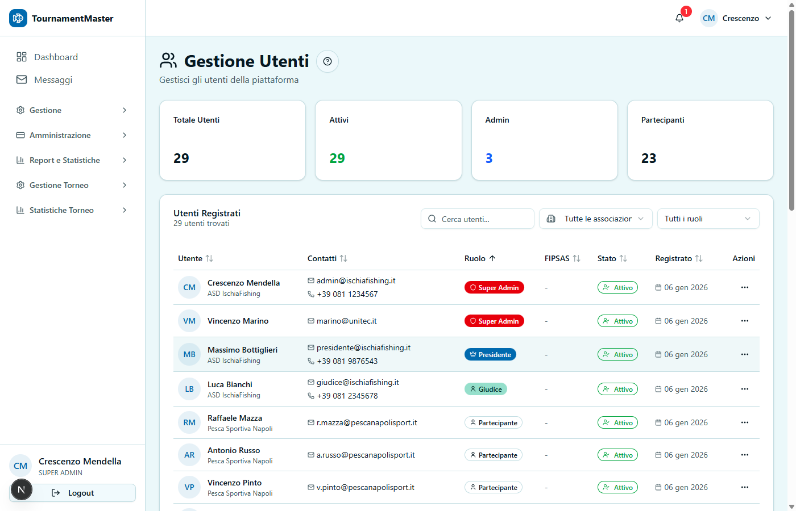

1. Primo Accesso
1.1 Accedere alla Piattaforma
- Apri il browser e vai all'indirizzo della piattaforma
- Clicca su "Accedi" in alto a destra
- Inserisci:
- Email: l'indirizzo email fornito dal Super Admin
- Password: la password temporanea ricevuta via email
- Clicca "Accedi"
1.2 Primo Accesso - Cambio Password
Al primo accesso ti verra chiesto di:
- Cambiare la password temporanea
- Completare il profilo (nome, telefono, foto)
- Accettare i termini di servizio
1.3 Recupero Password
Se hai dimenticato la password:
- Clicca "Password dimenticata?" nella pagina di login
- Inserisci la tua email
- Controlla la casella email (anche spam)
- Clicca il link ricevuto e imposta una nuova password

Figura 1.1 - Pagina di Login
2. La Tua Dashboard
Dopo il login, vedrai la Dashboard Amministratore con:
2.1 Panoramica Rapida
| Sezione |
Cosa Mostra |
| Tornei Attivi | Numero di tornei in corso |
| Iscrizioni Pendenti | Iscrizioni in attesa di approvazione |
| Catture da Validare | Catture in attesa di verifica |
| Partecipanti Totali | Numero utenti registrati |
2.2 Menu Principale
Il menu laterale ti permette di accedere a:
- Dashboard - Panoramica generale
- Tornei - Gestione completa tornei
- Utenti - Gestione partecipanti e staff
- Squadre - Visualizza team registrati
- Report - Statistiche e analisi
- Archivio - Storico tornei passati
- Impostazioni - Configurazione associazione

Figura 2.1 - Dashboard Amministratore
3. Gestione Tornei
3.1 Creare un Nuovo Torneo
Dashboard → Tornei → + Nuovo Torneo
Step 1: Informazioni Base
- Nome Torneo: Es. "Campionato Sociale 2026"
- Descrizione: Breve descrizione della gara
- Disciplina: Seleziona tra: Drifting, Big Game, Traina, Bolentino, Spinning, Shore, Vertical Jigging, Eging, Carpfishing, ecc.
- Livello: Club, Provinciale, Regionale, Nazionale
Step 2: Date e Orari
- Data Inizio: Quando inizia la gara
- Data Fine: Quando termina (opzionale per gare di un giorno)
- Apertura Iscrizioni: Da quando si possono iscrivere
- Chiusura Iscrizioni: Deadline per iscriversi
- Orario Partenza: Ora di inizio gara
- Orario Rientro: Ora massima di rientro
Step 3: Location e Zone
- Localita: Dove si svolge (es. "Porto di Ischia")
- Zone di Pesca: Definisci le aree valide per pescare
- Clicca sulla mappa per disegnare il poligono
- Oppure carica un file GeoJSON
Step 4: Quote e Limiti
- Quota Iscrizione: Importo in Euro (0 = gratuito)
- Max Partecipanti: Limite massimo iscritti
- Min Partecipanti: Minimo per confermare la gara
- Max Membri per Squadra: Da 1 a 6
Step 5: Regolamento
- Peso Minimo Cattura: Peso minimo per validita (kg)
- Max Catture per Giorno: Limite catture (0 = illimitato)
- Specie Ammesse: Seleziona le specie valide
- Note Regolamento: Regole aggiuntive
Clicca "Salva Bozza" per salvare senza pubblicare.

Figura 3.1 - Lista Tornei
3.2 Stati del Torneo
Un torneo attraversa questi stati:
BOZZA → PUBBLICATO → ISCRIZIONI APERTE → IN CORSO → COMPLETATO
| Stato |
Significato |
Azioni Disponibili |
| BOZZA | In fase di creazione | Modifica tutto, Pubblica |
| PUBBLICATO | Visibile ma non iscrivibile | Apri iscrizioni |
| ISCRIZIONI APERTE | Si accettano iscritti | Chiudi iscrizioni |
| IN CORSO | Gara attiva | Registra catture, Concludi |
| COMPLETATO | Gara terminata | Genera report, Archivia |
| ANNULLATO | Gara cancellata | - |
3.3 Pubblicare un Torneo
Tornei → [Seleziona Torneo] → Pubblica
Prima di pubblicare, verifica:
- Almeno una zona di pesca definita
- Date corrette
- Quota iscrizione impostata
- Regolamento completo
3.4 Aprire le Iscrizioni
Tornei → [Torneo Pubblicato] → Apri Iscrizioni
Da questo momento i partecipanti potranno:
- Visualizzare il torneo nella lista pubblica
- Iscriversi (singolarmente o come squadra)
- Pagare la quota (se prevista)
3.5 Avviare la Gara
Tornei → [Torneo] → Avvia Torneo
Requisiti:
- Iscrizioni chiuse
- Minimo partecipanti raggiunto
- Almeno un giudice assegnato
3.6 Concludere la Gara
Tornei → [Torneo In Corso] → Concludi Torneo
Dopo aver concluso:
- La classifica diventa definitiva
- Non si possono piu registrare catture
- Si possono generare i report finali
4. Gestione Partecipanti
4.1 Visualizzare gli Iscritti
Tornei → [Torneo] → Partecipanti
Vedrai una tabella con:
- Nome partecipante
- Email e telefono
- Squadra/Barca
- Stato iscrizione (Pendente, Confermato, Rifiutato)
- Stato pagamento

Figura 4.1 - Lista Partecipanti Torneo
4.2 Approvare/Rifiutare Iscrizioni
Per ogni iscrizione pendente:
- Clicca sulla riga del partecipante
- Verifica i dati e documenti
- Clicca:
- Approva - Conferma l'iscrizione
- Rifiuta - Inserisci motivazione e rifiuta
4.3 Aggiungere Partecipante Manualmente
Partecipanti → + Aggiungi Partecipante
Utile per:
- Iscrizioni telefoniche
- Iscrizioni last-minute
- Correzioni
4.4 Esportare Lista Partecipanti
Partecipanti → Esporta
Formati disponibili:
- Excel (.xlsx) - Per elaborazioni
- CSV - Per importare altrove
- PDF - Per stampa
5. Gestione Giudici e Staff
5.1 Assegnare Giudici al Torneo
Tornei → [Torneo] → Giudici
- Clicca "+ Assegna Giudice"
- Seleziona un utente con ruolo JUDGE dalla lista
- Scegli il ruolo nel torneo:
- Direttore di Gara - Responsabile principale
- Giudice - Valida catture
- Ispettore - Controllo barche
- Clicca "Assegna"

Figura 5.1 - Assegnazione Giudici
5.2 Creare un Nuovo Giudice
Se il giudice non e ancora registrato:
- Vai su Utenti → + Nuovo Utente
- Inserisci email, nome, telefono
- Seleziona ruolo: JUDGE
- Salva - ricevera email con credenziali
5.3 Assegnare Ispettori alle Barche
Tornei → [Torneo] → Giudici → Assegnazioni
Per tornei Drifting/Big Game:
- Vedi la matrice Barche x Ispettori
- Trascina un ispettore sulla barca assegnata
- Il sistema verifica che l'ispettore non sia della stessa societa
5.4 Stampare Assegnazioni
Clicca "Stampa PDF Assegnazioni" per generare:
- Lista ispettori con barca assegnata
- Contatti di emergenza
- Mappa zone di pesca
6. Validazione Catture
6.1 Visualizzare Catture Pendenti
Dashboard → Catture da Validare
Oppure: Tornei → [Torneo] → Catture

Figura 6.1 - Catture da Validare
6.2 Validare una Cattura
Per ogni cattura vedrai:
- Foto (clicca per ingrandire)
- Dati: peso, lunghezza, specie
- GPS: posizione sulla mappa
- Orario: quando e stata registrata
- Pescatore: chi l'ha registrata
Per approvare:
- Verifica la foto (pesce visibile, misure corrette)
- Controlla che il GPS sia nella zona valida
- Clicca "Approva"
- (Opzionale) Aggiungi note
Per rifiutare:
- Clicca "Rifiuta"
- Seleziona il motivo:
- Foto non valida
- Fuori zona
- Peso non verificabile
- Specie non ammessa
- Altro (specifica)
- Conferma
6.3 Catture Contestate
Se un partecipante contesta un rifiuto:
- Vai su Catture → Contestate
- Rivedi la cattura con il Direttore di Gara
- Conferma rifiuto o Approva
7. Classifiche e Punteggi
7.1 Visualizzare la Classifica
Tornei → [Torneo] → Classifica
La classifica mostra:
- Posizione
- Partecipante/Squadra
- Punti totali
- Numero catture
- Peso totale
- Cattura maggiore

Figura 7.1 - Classifica Torneo
7.2 Come si Calcolano i Punti
Il sistema calcola automaticamente:
Punti = Peso (kg) x 100 x Moltiplicatore Specie
Esempio:
Cattura: 5.5 kg di Tonno (moltiplicatore 1.5)
Punti: 5.5 x 100 x 1.5 = 825 punti
7.3 Classifica Live
Durante la gara, la classifica si aggiorna in tempo reale quando:
- Viene approvata una cattura
- Viene assegnata una penalita
7.4 Generare Classifica PDF
Classifica → Esporta PDF
Il PDF include:
- Intestazione associazione
- Logo e nome torneo
- Classifica completa
- Dettaglio catture per partecipante
- Firma Direttore di Gara
8. Import/Export Dati
8.1 Importare Partecipanti da Excel
Tornei → [Torneo] → Import/Export → Importa Partecipanti
- Scarica il template Excel cliccando "Scarica Template"
- Compila il file con i dati dei partecipanti:
- Nome, Cognome
- Email
- Telefono
- Nome Squadra (opzionale)
- Nome Barca (opzionale)
- Carica il file compilato
- Rivedi l'anteprima e conferma
8.2 Esportare Dati
Import/Export → Esporta
Puoi esportare:
| Dato |
Formati |
Uso |
| Partecipanti | Excel, CSV, JSON | Lista iscritti |
| Catture | Excel, CSV, JSON | Dettaglio catture |
| Classifica | Excel, CSV, JSON, PDF | Risultati |
| FIPSAS | Excel (formato federale) | Omologazione |
8.3 Formato FIPSAS
L'export FIPSAS genera un file conforme ai requisiti federali:
- Intestazione gara
- Dati organizzatore
- Classifica ufficiale
- Campo firma Direttore
9. Archivio e Statistiche
9.1 Hall of Fame
Dashboard → Archivio → Hall of Fame
Mostra i vincitori di tutti i tornei passati:
- Classifica Generale
- Cattura Maggiore
- Piu Catture
Puoi filtrare per:

Figura 9.1 - Archivio e Hall of Fame
9.2 Record Associazione
Archivio → Record
Visualizza i record storici:
- Cattura piu grande (peso)
- Piu catture in un torneo
- Piu punti in un torneo
- Piu vittorie (partecipante)
9.3 Statistiche Partecipanti
Archivio → Le Mie Statistiche
Ogni partecipante puo vedere:
- Tornei partecipati
- Vittorie e podi
- Catture totali
- Peso totale
- Miglior posizione
9.4 Report Analitici
Dashboard → Report
Disponibili:
- Andamento iscrizioni nel tempo
- Distribuzione catture per specie
- Performance per zona
- Trend stagionali
10. Impostazioni Associazione
10.1 Branding e Personalizzazione
Impostazioni → Branding
Puoi personalizzare:
- Logo - Carica il logo dell'associazione
- Banner - Immagine header
- Colori - Colore primario e secondario
- Nome - Nome visualizzato
- Descrizione - Chi siete

Figura 10.1 - Pagina Pubblica dell'Associazione
10.2 Informazioni Contatto
Impostazioni → Contatti
- Indirizzo sede
- Email di contatto
- Telefono
- Sito web
- Social media (Facebook, Instagram)
10.3 Dati FIPSAS
Impostazioni → FIPSAS
Se affiliati FIPSAS:
- Codice societa
- Codice comitato
- Regione/Provincia
10.4 Gestione Utenti Associazione
Impostazioni → Utenti
Puoi:
- Vedere tutti gli utenti registrati
- Modificare ruoli (Partecipante, Giudice, Organizzatore)
- Disattivare account
- Resettare password

Figura 10.2 - Gestione Utenti
11. Risoluzione Problemi
11.1 Non riesco ad accedere
Problema: Password errata o dimenticata
Soluzione:
- Clicca "Password dimenticata"
- Controlla anche la cartella spam
- Se non ricevi email, contatta il Super Admin
11.2 Un partecipante non riesce a iscriversi
Problema: Errore durante l'iscrizione
Verifica:
- Le iscrizioni sono aperte?
- C'e ancora posto (max partecipanti)?
- Il partecipante ha completato il profilo?
- Ha caricato i documenti richiesti?
11.3 La cattura non appare in classifica
Problema: Cattura registrata ma punti non visibili
Verifica:
- La cattura e stata approvata? (stato = APPROVED)
- Il GPS era nella zona valida?
- La specie e tra quelle ammesse?
11.4 Non posso avviare il torneo
Problema: Pulsante "Avvia" disabilitato
Verifica:
- Le iscrizioni sono chiuse?
- C'e il minimo di partecipanti?
- E stato assegnato almeno un giudice?
11.5 Il PDF non si genera
Problema: Errore generazione PDF
Soluzione:
- Riprova dopo qualche secondo
- Verifica che ci siano dati da esportare
- Se persiste, contatta supporto
12. Domande Frequenti
Generali
D: Posso gestire piu tornei contemporaneamente?
R: Si, non c'e limite al numero di tornei attivi.
D: I partecipanti possono iscriversi da soli?
R: Si, una volta pubblicato il torneo e aperte le iscrizioni.
D: Posso modificare un torneo gia pubblicato?
R: Si, ma con limitazioni (non puoi cambiare date se ci sono iscritti).
Iscrizioni
D: Come gestisco i pagamenti?
R: Il sistema traccia lo stato pagamento. Il pagamento effettivo avviene fuori piattaforma (bonifico, contanti). Tu confermi manualmente.
D: Posso rimborsare un iscritto?
R: Si, cambia lo stato in "Rimborsato" e gestisci il rimborso offline.
D: C'e una lista d'attesa?
R: Se raggiungi il massimo, i nuovi iscritti vanno in waitlist automatica.
Durante la Gara
D: Chi puo registrare le catture?
R: I partecipanti dalla loro app, oppure ispettori/giudici dal pannello.
D: Posso correggere una cattura gia approvata?
R: Si, vai su Catture → [Cattura] → Modifica. Solo admin e direttore.
D: Come gestisco una protesta?
R: Vai su Catture → Contestate, rivedi con il direttore e decidi.
Report
D: Posso stampare la classifica durante la gara?
R: Si, sara marcata come "Provvisoria".
D: Il PDF e valido per FIPSAS?
R: Usa l'export specifico "Formato FIPSAS" per la documentazione federale.
Glossario
| Termine |
Significato |
| Tenant | La tua associazione sulla piattaforma |
| TENANT_ADMIN | Il tuo ruolo di amministratore |
| Bozza (Draft) | Torneo non ancora pubblicato |
| Catch | Una cattura registrata |
| Strike | Un'abboccata/ferrata durante la pesca |
| Leaderboard | Classifica in tempo reale |
| GPS Validation | Verifica che la cattura sia nella zona |
| Homologation | Omologazione FIPSAS del risultato |